당신과 조화를 이루는 색은 회색이 많이 섞인 톤 다운된 파스텔 계열의 컬러입니다.
‘여름 쿨 뮤트 톤’의 컬러는 명도 가 낮아 눈이 피곤하지 않은 은은한 느낌을 줍니다.
# 봄 뮤트 컬러란 ?
봄 뮤트인 당신은

‘봄 웜 브라이트 톤`은 대체로 고채도의 따뜻하고 발랄한 컬러가 잘어울리는 타입입니다.
‘봄 웜 브라이트 톤`의 장점은 고명도의 쨍하고 선명한 컬러를 잘 소화하는 것입니다.
다만, 너무 창백한 메이크업은 매력을 떨어뜨릴 수 있으니 주의해야 합니다.
당신의 팔레트를 채워드려요
당신과 조화를 이루는 색은 옐로베이스의 중-고명도, 고채도의 선명한 컬러입니다.
‘봄 웜 브라이트 톤’의 컬러는 색감이 따뜻하고 비비드한 순색에 가까워서 눈에 잘 띕니다.
베스트 스타일링
메이크업
① 아이
펄이 들어간 오렌지 컬러의 섀도우를 넓게 발라 포인트를 줍니다.
갈색 아이 라이너를 이용하여 라인을 그리고, 스머지하여 자연스럽게 표현해 주세요.
②치크
볼 중앙에 피치 컬러의 블러셔를 여리 여리하게 발색하여 아이와 립 컬러를 자연스럽게 연결해 줍니다 .
③ 립
광택감이 있고 쨍한 코랄 핑크나 코랄 레드 컬러의 틴트를 입술에 전체적으로 채워 바르면
과일 같은 이미지를 연출할 수 있습니다.
봄 뮤트를 위한 코디 추천
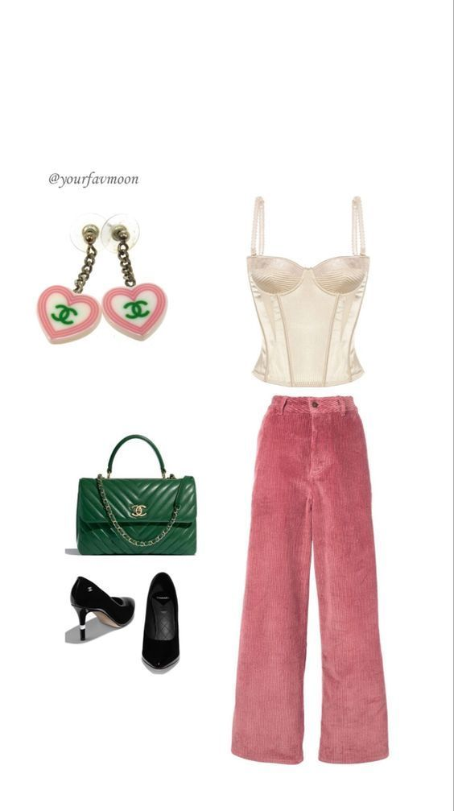 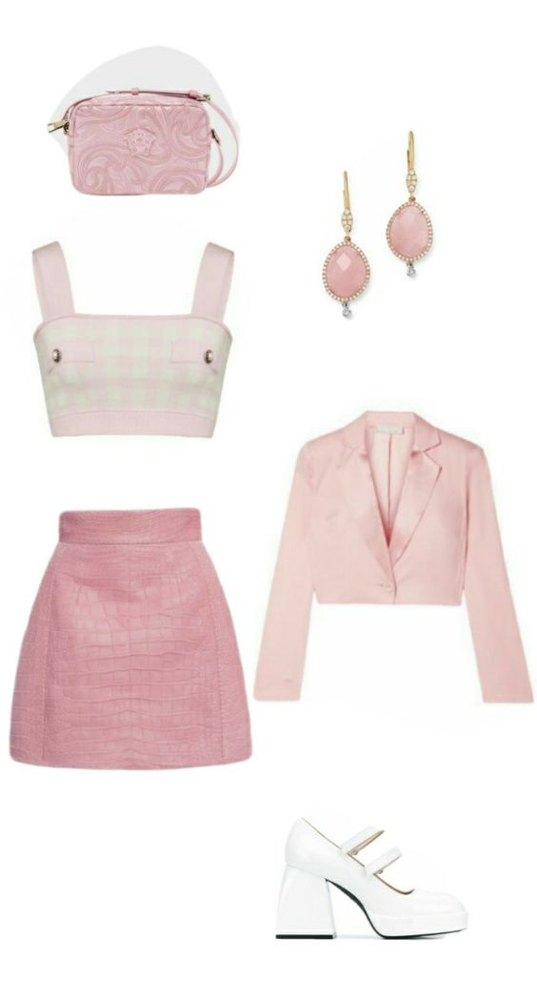 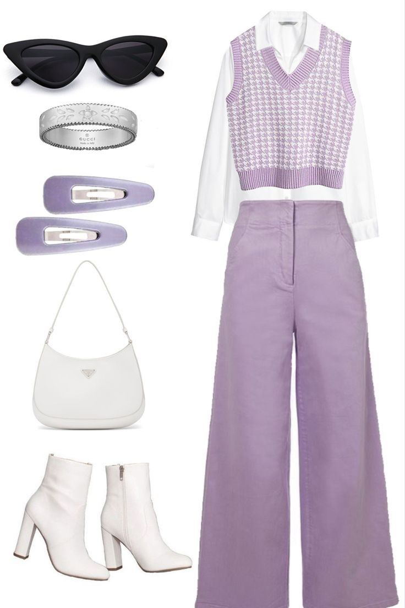
봄 브라이트 타입의 생기있고 사랑스러운 느낌은 정말 독보적이에요~
곡선 무드의 따뜻하고 프레쉬한 분위기가 본연의 생동감을 확 살려줄 수 있어요! 캐주얼하고 영한(young) 무드도 정말 잘 어울리죠~
상의의 경우 터틀넥보다 목을 시원하게 드러내는 디자인이 좋습니다
봄 뮤트를 위한 코디 추천
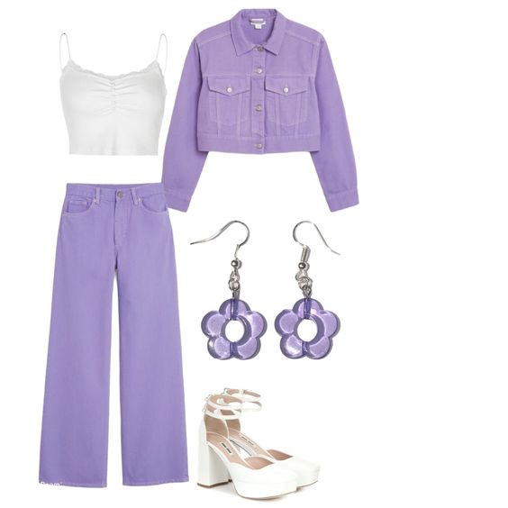 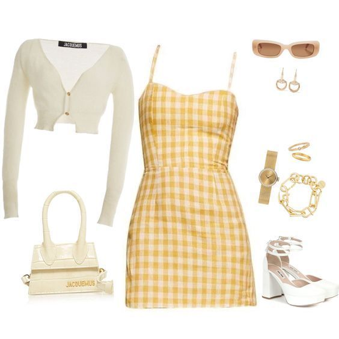 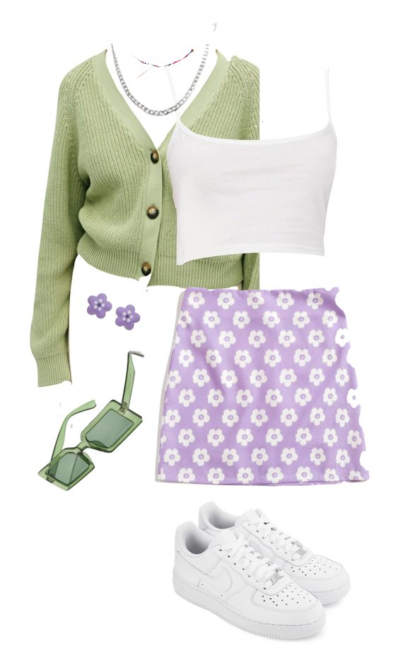
힙, 펑키, 스트릿, 써지컬 같은 스타일은 소화하기 어렵답니다.
각진 어깨 패드처럼 과한 직선 무드는 주의해주세요 :)
봄 뮤트를 위한 립 추천
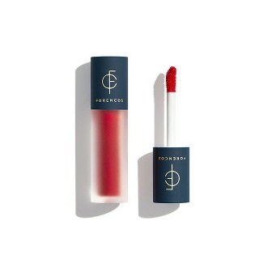 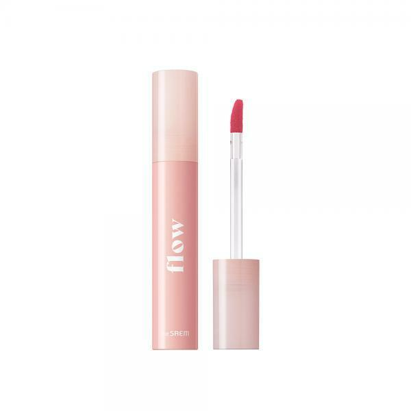 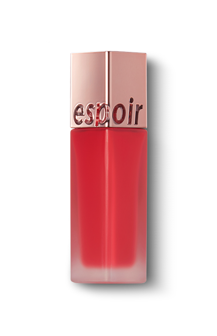
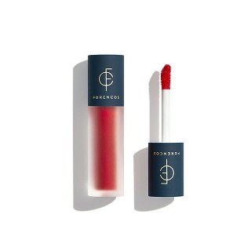 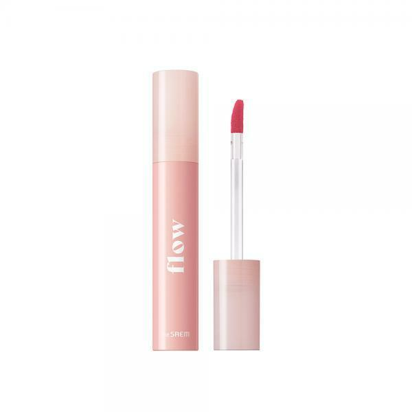 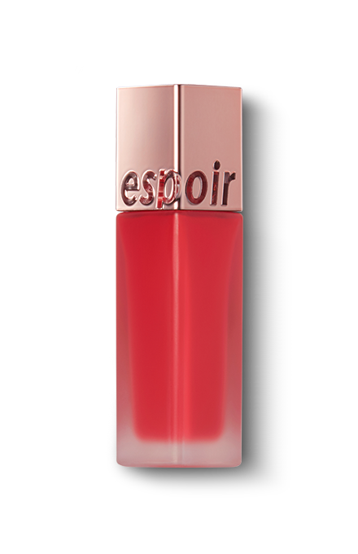
1. [포렌코즈] 포렌코즈 속타투 틴트 13 에떼
#
한줄평 : 굉장히 밝고 선명한 레드빛을 볼 수 있어요.
입술에 올렸을 때도 따뜻함이 감도는 맑은 레드 컬러로 얼굴에 형광등을 탁! 켜주는 듯 했습니다. (네이버 블로그, 컬러라이즈)
6,380원
2. [더샘] 더샘 플로우 립 글로우 틴트 RD01 러브드
한줄평 : 러브드는 생기 가득한 핑크 레드 컬러! (네이버 블로그, 박하
9,050원
3. [에스쁘아] 에스쁘아 꾸뛰르 립 틴트 벨벳 멜로 포멜로
한줄평 : 한줄평 : 크리미한 느낌의 너무 진하지 않은 코랄이나 자몽느낌의 컬러로 발색이 되더라구요! (네이버 블로그, H Story :)
13,530원